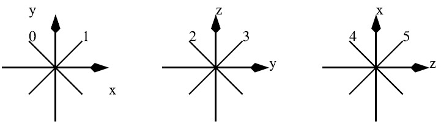
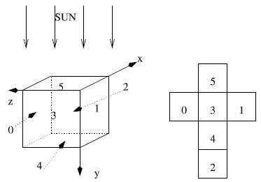

Home Page
F.A.Qs
Statistical Charts
Past Contests
Scheduled Contests
Award Contest
| Online Judge | Problem Set | Authors | Online Contests | User | ||||||
|---|---|---|---|---|---|---|---|---|---|---|
| Web Board Home Page F.A.Qs Statistical Charts | Current Contest Past Contests Scheduled Contests Award Contest | |||||||||
|
Language: UFO Cubes in Roswell
Description Bob and Alice live in Roswell (New Mexico, USA) and they have found some strange item on the floor left by an Unidentified Flying Object (UFO). Let us recall that on July 8, 1947, as stated by Col. William Blanchard, Commander of the 509th Bomb Group at Roswell, ``the wreckage of a crashed disk has been recovered". We believe that this strange item comes from this crash. It looks like a big cube of size s , 1<=s<=215 with tiny holes. It shines differently on every face. Bob and Alice are rather smart and they have quickly understood that some complex system inside the cube reflects the light of the sun so that sunlight emerges from some but not all holes of every face.
Experiments led by Bob and Alice have shown that the cube is full of n , 1<=n<=106 double-sided mirrors. Mirrors are located at integer coordinates. They are small (less than one unit in diameter). They are oriented in one of the following directions:  Bob and Alice analyze the cube by putting a light sensor in front of each face of the cube. This simple experiment allows them to compute the amount of light reflected through the corresponding face (i.e., the number of holes through which a light ray emerges). More precisely, the cube is oriented in the following way (the sun is on the y < 0 axis) and there is one unit of light which enters the cube on every integer coordinate of the upper face ( y = 0, 0<=x<=s, 0<=z<=s ).  You are requested to simulate the behavior of the cube. Given the position and the orientation of each mirror, you are kindly asked to compute, for each face, the number of rays that go out of the face of and the total number of times the corresponding rays have been deviated. Note that when the direction of a ray belongs to the plane of a mirror, it passes through without any interaction. Input The first integer (on the first line) is the size s of the box. The second line contains an integer n that corresponds to the total number of mirrors in the box. We then have n lines, each of which containing 4 integers : the coordinates (x, y, z) of the corresponding mirror and its orientation (with respect to the above figure). Notice that the coordinates (x, y, z) of mirrors are pairwise distinct. Output The output is made of 12 integers (one per line). The 12 integers are made of 6 groups of 2 integers, each group is related to a different face i of the cube ordered as shown in the above figure. In each group, the first integer is the number of rays (the amount of light) that go out of the face i and the second one is the number of times the corresponding rays have been deviated. Sample Input 5 4 4 4 0 0 1 3 0 1 1 1 0 0 4 1 0 1 Sample Output 0 0 0 0 1 1 1 1 34 0 0 0 Hint Very huge input, scanf is recommended. Source |
[Submit] [Go Back] [Status] [Discuss]
All Rights Reserved 2003-2013 Ying Fuchen,Xu Pengcheng,Xie Di
Any problem, Please Contact Administrator